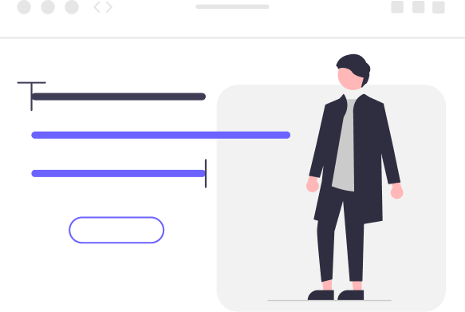

Hei!
Jeg er en webutvikler og apputvikler på 26 år fra Sandvika. Jeg begynte å kode for litt over 4 år siden, og jeg digget det med en gang. Mine største interesser ligger i å jobbe med det visuelle. Brukeropplevelse og universell utforming er det jeg setter fremst. Det er viktig for meg at tjenestene jeg bygger skal fungere for absolutt alle!
Ved siden av data, er jeg veldig glad i trening og turer. Når jeg ikke er bak en skjerm, så er jeg mest sannsynlig ute i skogen, eller på trening.
Ønsker du et samarbeid?
Trenger du en portefølje, nettside eller redesign av nettside, er jeg her for å hjelpe. Dersom du lurer på noe, er det bare å ta kontakt. Jeg er helt åpen for en uforpliktende, hyggelig samtale!
Kontakt meg